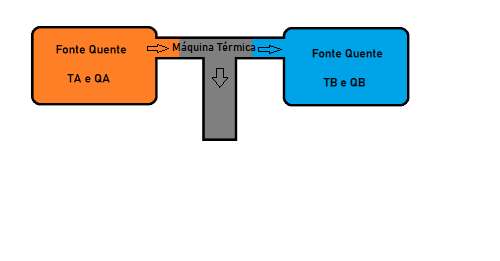
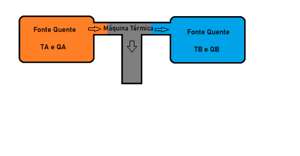

1º Lei da termodinâmica
A 1º Lei da Termodinâmica se baseia na ideia da conservação de energia, a qual diz que um sistema é incapaz de criar ou consumir energia,
porém, conseguem a transferir ou guardar, tal ação é conhecida como trabalho, ao realizar um trabalho, o sistema aumenta sua energia interna
A fórmula matemática da 1º Lei é a seguinte:
Q=t+ ∆U
Informações: Q= Calor t= Trabalho ∆U= Energia interna

A 1º Lei da Termodinâmica se baseia na ideia da conservação de energia, a qual diz que um sistema é incapaz de criar ou consumir energia,
porém, conseguem a transferir ou guardar, tal ação é conhecida como trabalho, ao realizar um trabalho, o sistema aumenta sua energia interna
A fórmula matemática da 1º Lei é a seguinte:
Q=t+ ∆U
Informações: Q= Calor t= Trabalho ∆U= Energia interna
2º Lei da termodinâmica
A segunda lei explica que é impossível uma máquina, ou sistema, ter uma eficiência de 100%, significando que o sistema sempre terá uma taxa de calor não aproveitada. De acordo com Kelvin-Planck.
Outro físico, conhecido como Clausius diz que: O calor não pode fluir espontâneamente de um corpo com temperatura menor para um corpo de temperatura maior, e que para isso é necessário um agente externo, já que naturalmente o fluxo de calor é do maior para o menor.

A segunda lei explica que é impossível uma máquina, ou sistema, ter uma eficiência de 100%, significando que o sistema sempre terá uma taxa de calor não aproveitada. De acordo com Kelvin-Planck.
Outro físico, conhecido como Clausius diz que: O calor não pode fluir espontâneamente de um corpo com temperatura menor para um corpo de temperatura maior, e que para isso é necessário um agente externo, já que naturalmente o fluxo de calor é do maior para o menor.
